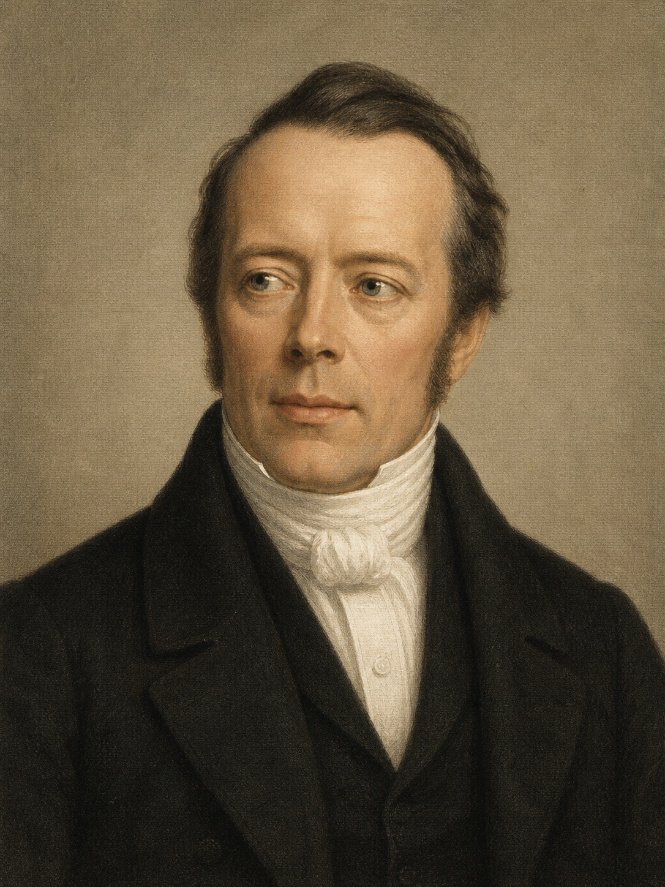
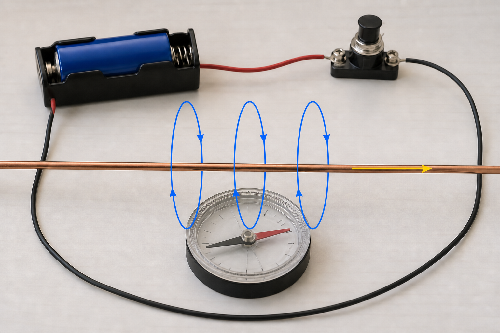
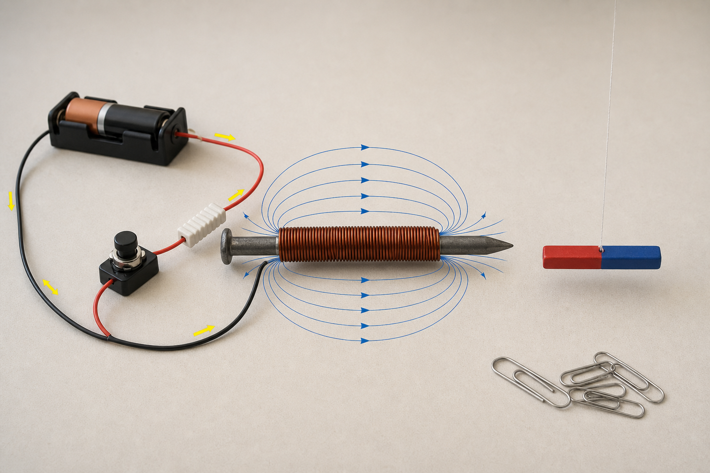

Sistemas Multi Física - Profesor Javier Pereyra
Corriente eléctrica y campo magnético
La experiencia de Oersted: una corriente desvía una brújula y revela el vínculo entre electricidad y magnetismo.

1 Objetivos de aprendizaje
Reconocer que una corriente eléctrica produce un campo magnético.
Dibujar las líneas de campo alrededor de un conductor recto.
Aplicar la regla de la mano derecha y anticipar qué cambia al invertir la corriente.
Modificar una variable por vez y registrar evidencias con seguridad.
2 Una brújula que no apunta al norte
Una brújula se orienta aproximadamente con el campo magnético terrestre. Sin embargo, cuando circula corriente por un cable cercano, la aguja cambia de dirección. En 1820, Hans Christian Oersted observó este efecto y aportó una evidencia decisiva: electricidad y magnetismo no son fenómenos independientes.
3 El montaje de Oersted

No circula corriente y la brújula se orienta principalmente con el campo terrestre.
La corriente crea otro campo y la aguja se orienta según la combinación de ambos.
Al intercambiar los bornes de la pila, se invierte el campo del cable y cambia el sentido de la desviación.
Al alejar la brújula, el campo del cable disminuye y su efecto se vuelve menos evidente.
4 Dirección del campo: regla de la mano derecha
Rodeá mentalmente el conductor con la mano derecha. El pulgar señala la corriente convencional y los dedos curvados indican el sentido de las líneas de \(\vec B\).
5 Campo de un conductor recto largo
Esta expresión modela el campo a una distancia \(r\) de un conductor recto, muy largo y delgado, en aire o vacío.
Usamos \(\mu_0\approx1{,}26\times10^{-6}\,\mathrm{T\,m/A}\).
| Magnitud | Símbolo | Unidad SI | Lectura física |
|---|---|---|---|
| Campo magnético | \(B\) | tesla (T) | Intensidad del campo en el punto estudiado. |
| Corriente | \(I\) | ampere (A) | Si se duplica, \(B\) se duplica. |
| Distancia al eje del cable | \(r\) | metro (m) | Si se duplica, \(B\) se reduce a la mitad. |
| Permeabilidad magnética del vacío | \(\mu_0\) | \(\mathrm{T\,m/A}\) | Constante aproximada usada en el modelo. |
6 Ejemplo resuelto
Problema: por un conductor recto largo circula una corriente de \(5{,}0\,\mathrm A\). Calculá el campo a \(2{,}0\,\mathrm{cm}\) de su eje.
Datos en SI: \(I=5{,}0\,\mathrm A\), \(r=2{,}0\times10^{-2}\,\mathrm m\).
Fórmula: \(B=\mu_0 I/(2\pi r)\).
Reemplazo: \(B=(1{,}26\times10^{-6})(5{,}0)/[2\pi(2{,}0\times10^{-2})]\).
Resultado: \(\boxed{B\approx5{,}0\times10^{-5}\,\mathrm T=50\,\mu\mathrm T}\).
Interpretación: el valor es del mismo orden de magnitud que el campo terrestre. La orientación observada por la brújula depende de la suma vectorial de ambos campos.
7 Del cable al electroimán
Si enrollamos el conductor, los campos de las distintas espiras se refuerzan en el interior de la bobina. Un clavo de hierro dentro de ella concentra todavía más el campo y se transforma temporalmente en un electroimán.

8 Trabajo experimental seguro
Materiales
Un clavo de hierro, 80 a 120 vueltas de alambre de cobre esmaltado, una pila AA de \(1{,}5\,\mathrm V\) con portapila, pulsador momentáneo, resistencia de \(10\,\Omega\) y \(1\,\mathrm W\), cables, brújula o imán pequeño suspendido, clips y lija para los extremos del alambre.
Procedimiento
- Enrollá el alambre prolijamente y lijá solo sus dos extremos.
- Armá el circuito con la pila, el pulsador y la resistencia en serie, sin cerrarlo todavía.
- Registrá la orientación inicial de la brújula o del imancito.
- Presioná durante 2 o 3 segundos, observá y soltá. Dejá enfriar antes de repetir.
- Invertí los bornes de la pila y compará la nueva orientación.
- Probá luego si el clavo atrae clips mientras circula corriente y después de abrir el circuito.
| Tipo | Variable | Cómo se trabaja |
|---|---|---|
| Independiente principal | Sentido de la corriente | Se invierten los bornes de la pila. |
| Dependiente | Sentido o ángulo de giro | Se observa o mide la orientación del indicador. |
| Controladas | Distancia, posición, pila y montaje | Se mantienen iguales durante la comparación. |
9 Actividades
- Dibujá un cable recto con corriente hacia la derecha y representá, mediante la regla de la mano derecha, el sentido de \(\vec B\) por encima y por debajo del cable.
- Explicá por qué la desviación de la brújula cambia cuando se invierten los bornes de la pila.
- Si la corriente pasa de \(2{,}0\,\mathrm A\) a \(4{,}0\,\mathrm A\) sin cambiar \(r\), ¿cómo cambia \(B\)? Justificá por proporcionalidad.
- Si una brújula pasa de estar a \(1{,}0\,\mathrm{cm}\) a \(3{,}0\,\mathrm{cm}\) del mismo conductor, ¿qué fracción del campo inicial recibe según el modelo?
- Calculá \(B\) a \(5{,}0\,\mathrm{cm}\) de un conductor largo recorrido por \(I=8{,}0\,\mathrm A\).
- En cierto punto, un cable produce \(30\,\mu\mathrm T\) con \(I=3{,}0\,\mathrm A\). ¿Qué campo produciría allí con \(I=7{,}5\,\mathrm A\)?
- Completá una tabla para \(I=4{,}0\,\mathrm A\) y \(r=1, 2, 4, 8\,\mathrm{cm}\). Graficá \(r\) en el eje horizontal y \(B\) en el vertical. ¿La relación es lineal?
- Compará el montaje de Oersted y el electroimán: materiales, evidencia observada y pregunta científica que permite responder cada uno.
- Diseñá un registro de datos para estudiar cómo cambia el ángulo de la brújula al variar la distancia. Indicá qué variables controlarías.
- Un clavo atrae débilmente un imán incluso con el circuito abierto. Explicá por qué esa observación, por sí sola, no demuestra que esté circulando corriente y proponé un control experimental.
10 Preguntas para pensar
¿Por qué una brújula cercana no necesariamente apunta exactamente en la dirección del campo creado por el cable? ¿Qué evidencia permite distinguir un electroimán de un imán permanente? ¿Por qué aumentar el número de vueltas suele intensificar el efecto? ¿Qué límites tiene usar un clavo real para calcular el campo como si fuera un solenoide ideal?